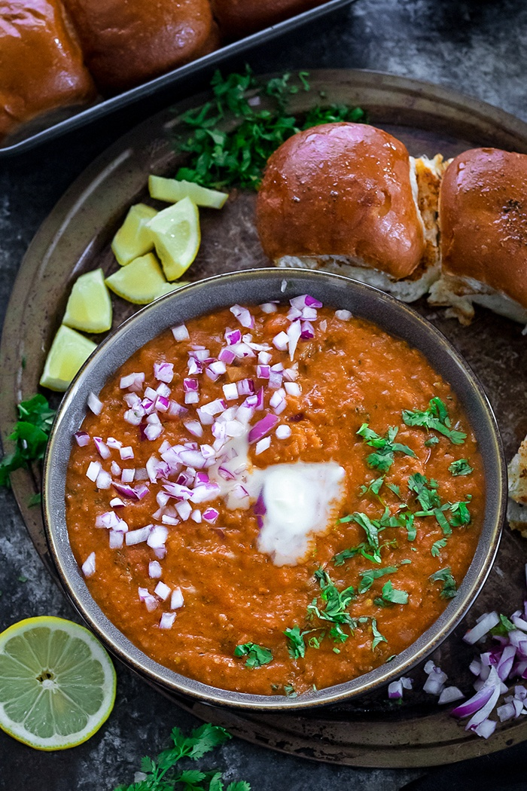

Pav Bhaji

What is Pav Bhaji?
Pav bhaji is a spiced mixture of mashed vegetables in a thick gravy served with bread. Vegetables in the curry may commonly include potatoes, onions, carrots, chillies, peas, bell peppers and tomatoes. Street sellers usually cook the curry on a flat griddle (tava) and serve the dish hot. A soft white bread roll is the usual accompaniment to the curry, but this does not preclude the use of other bread varieties such as chapati, roti or brown bread.
Ingredients needed
- 1 tsp oil
- 4 cubes of butter
- 1 onion
- 1 tsp ginger-garlic paste
- 1/2 cup lauki (chopped)
- 1/2 cup capsicum (chopped)
- 1 cup potatoes (chopped)
- 1/2 carrots (chopped)
- 2 tsp salt
- 3 tsp pav bhaji masala
- 1 tsp red chilli powder
- 1/2 cup tomato puree
- bread and butter for Pav
Directions
- Cook potatoes, tomatoes, carrots in pressure cooker until paste
- Throw in butter, ginger garlic paste, Pav Bhaji masala, salt, chili powder and tomato puree, mix well
- Once completed, begin cooking bread on stove with butter
- Enjoy!